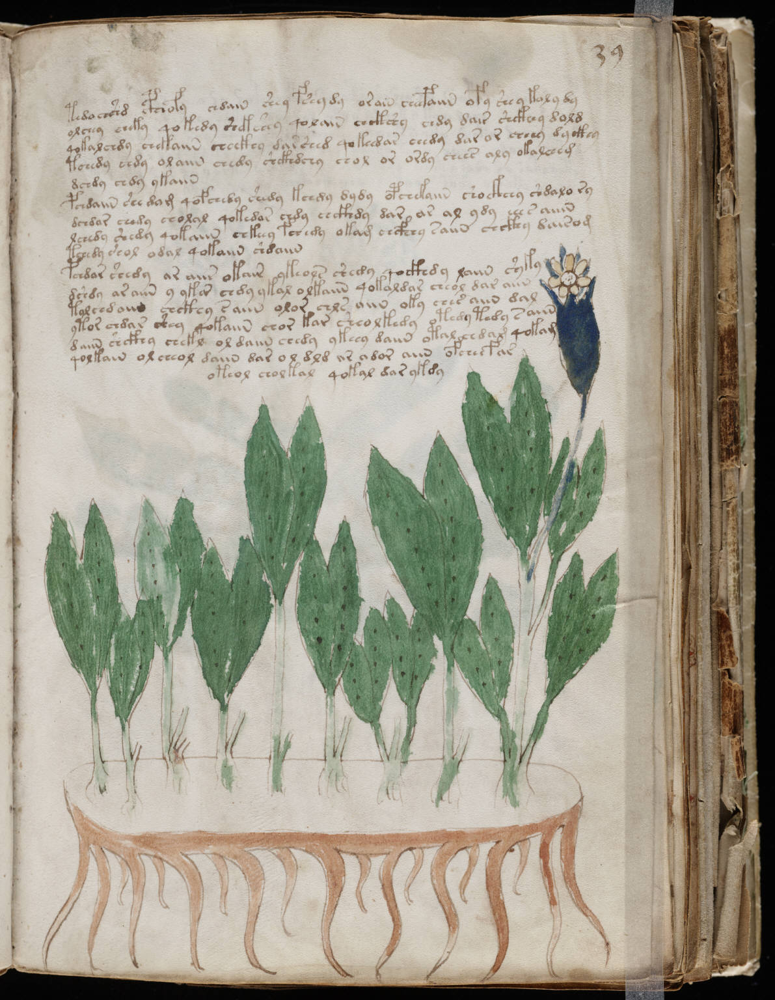

f39r
1tedo chshd cphhofy chdain shey fsey dy orain cheepaiin ofy shey koly dy2olchey cheky qokedy shekshey qolain chckshy chdy dair shckhey dold3qokalchdy chekaiin checkhy dar shed qokeedar eeedy dar or cheey dy ckhy4tohedy chdy olaiin chedy shckhdchy chol or ordy chees aly okalcheg5dchdy chdy ykaiin6pchdaiin she dam qofchedy shedy kchdy dydy opchekaiin shockhchy shdalo ry7dchdar chedy cholal qokedar chdy chckhdy dar ar al ydy eeesaiin8lchedy shedy qokaiin chkeey fchedy okam chcfhhy saiin chcphy dairom9tchedy shol odal qokaiin shdaiin10pchdar shedy ar aiir okair ykeols shedy qockhdy laiin syky11dshdy ar aiin y ykar chdy ykal olkaiin qokaldar cheol dar aiin12tolchdaiin chckhy saiin olor chls aiin oky ches aiin dal13ytor chdar shey qokaiin chor kar sheolkedy otedy tedy saiin14daiin shckhy chekl ol daiin chedy ykeey daiin otal chdam qokam15qolkain olcheol daiin dar ol dld iir ador aiin ofcheefar16oteol cholkalqokal dar ykdy
